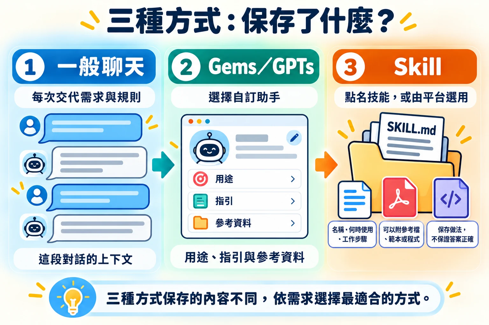
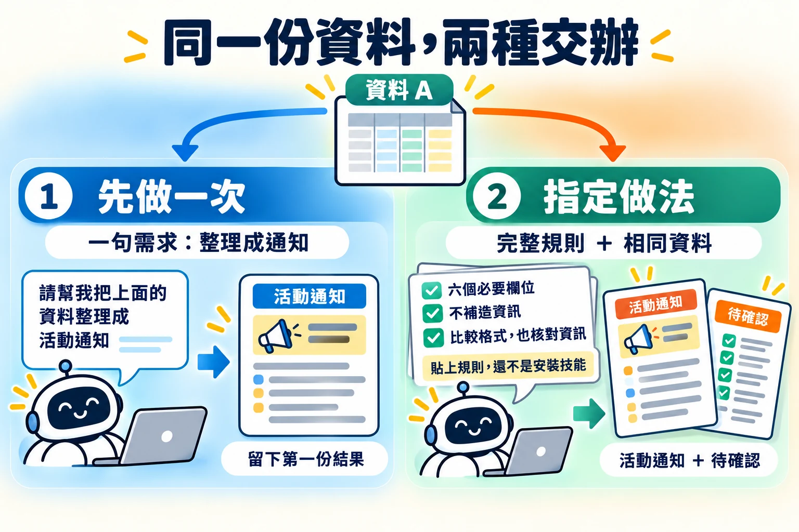
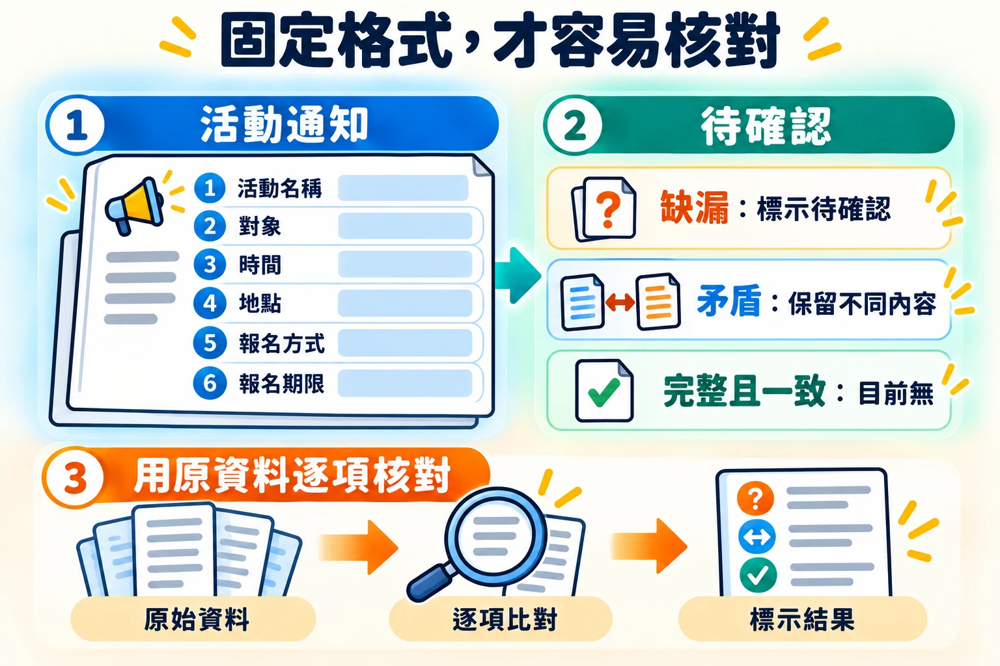
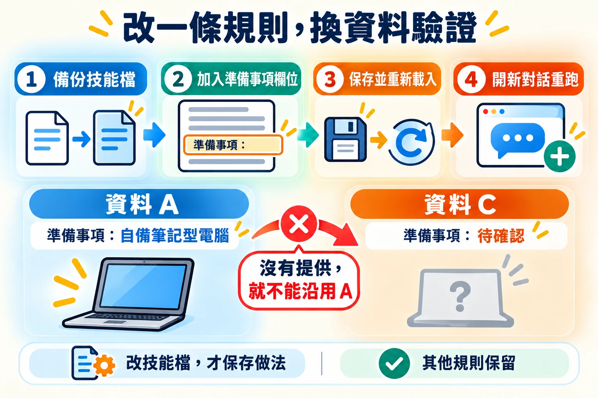
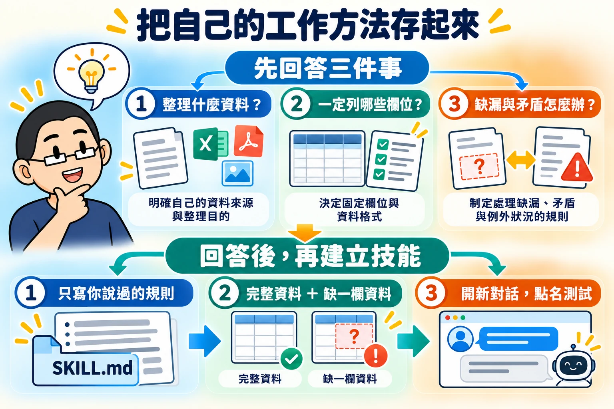
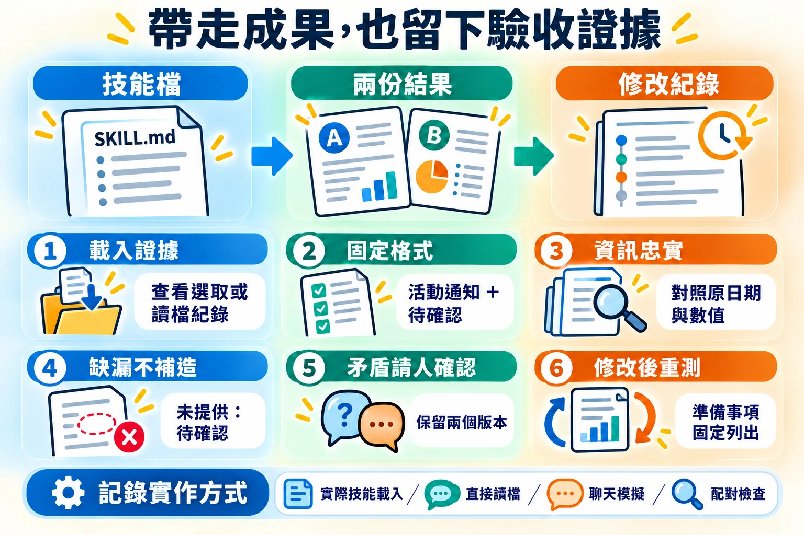

14:20–15:10 · 50 分鐘
單元二：從 Gems、GPTs 到自己的第一個 Skill
同一件整理工作，每次都要重新交代規則嗎？這一單元用一則活動通知，體驗把「做事的方法」保存成技能（Skill），換一份資料也能照同樣的方法完成，再親自核對結果。
依序完成五個操作：先做一次 → 指定做法 → 使用保存的技能 → 換資料再用 → 改一條規則。最後留下技能檔、兩份結果與修改紀錄，並想好一個自己下次想保存的工作方法。
- ① 先做一次普通聊天，只給一句需求
- ② 指定做法貼上完整規則，再整理一次
- ③ 使用技能點名技能，不再貼規則
- ④ 換資料再用缺漏與矛盾也照規則處理
- ⑤ 改一條規則修改技能檔，重跑核對
開始前：下載練習包
- 下載並解壓縮練習包，裡面的 learner-workspace 資料夾有資料 A、B、C 三份文字檔，以及已經寫好的技能。
- 用 Codex 或 Antigravity 開啟 learner-workspace 資料夾。技能放在資料夾內的 .agents/skills/event-notice-intro/ 裡；名稱以句點開頭的資料夾，在檔案總管中預設可能看不到。
- 若使用 Gemini 網頁版且帳號已有 Skills 功能，可匯入技能包。
- 找不到技能入口時，可以和同學配對操作；只在聊天中貼上規則的模擬體驗也可以練習，但請在紀錄中另外標示。
01三種方式，先看懂用途

單元一練習了怎麼把需求說清楚。如果同一種整理工作每週都要做，每次都重新貼上全部規則既費時，也容易漏掉一條。各平台因此提供把指引「保存起來」的方式。
| 方式 | 你怎麼使用 | 保存了什麼 |
|---|---|---|
| 一般聊天 | 每次提供這次的需求與規則 | 只有這段對話的上下文 |
| Gems／GPTs | 選擇某個用途的自訂助手，再提供資料 | 助手的用途、指引及參考資料等設定 |
| Skill（技能） | 點名技能，或由平台判斷何時使用 | 可重用的工作方法，可附參考檔、範本或程式 |
- Gems
- Gemini 的自訂助手功能。
- GPTs
- ChatGPT 的自訂助手功能。
- Skill
- 一個資料夾，核心是一份 SKILL.md 說明檔：寫明技能的名稱、什麼時候使用，以及一步一步的工作方法。Gems／GPTs 常見的工作指引可以保存成技能，技能也能承載更多流程；實際能用的工具與帳號功能依平台而定。
Google 公告 Gems 依帳號類型轉向 skills；OpenAI 的企業版遷移指引則是把 GPTs 轉向包含 skills／apps 的 plugins。這不表示所有舊功能都已無差異地搬移。Google 說明、OpenAI 說明
產品資訊查核日期：2026 年 10 月 7 日。實際入口請以自己的帳號為準。
02操作 1、2：先做一次，再指定做法

以下是資料 A：資訊完整的活動。全部資料都是虛構的練習內容，請保留原有日期與內容。
活動名稱：AI 工具體驗小聚
參加對象：對 AI 工具有興趣的初學者
活動時間：2026 年 10 月 17 日 14:00–15:00
地點：教學大樓三樓 R301 教室
名額：20 人
報名方式：向活動窗口報名
報名期限：2026 年 10 月 15 日 17:00
準備事項：自備筆記型電腦操作 1：照平常的方式問
在沒有載入練習技能的普通聊天中，貼上這句，再貼資料 A。留下第一份結果。
請用臺灣繁體中文，把以下活動資訊整理成一則通知。可能的輸出範例｜操作 1・資料 A
以下為編製的示例，實際回答可能不同。先自己操作，再展開比較。
AI 工具體驗小聚活動通知
歡迎對 AI 工具有興趣的初學者參加「AI 工具體驗小聚」！活動將於 2026 年 10 月 17 日 14:00–15:00，在教學大樓三樓 R301 教室舉行，名額為 20 人。
請於 2026 年 10 月 15 日 17:00 前向活動窗口報名，並自備筆記型電腦。
比較重點：一般聊天也可能正確整理資訊，但沒有指定固定欄位時，下一次的版面可能不同；這個示例不代表一定需要技能才能完成。
看看：資訊有沒有改變？AI 有沒有加入原資料沒提供的內容？你還想指定什麼？

操作 2：指定固定做法
另開新聊天，貼上下面的規則，再貼同一份資料 A。這是體驗「固定指引」的效果，還沒有建立 Gem、GPT，也還沒有安裝技能。
請以臺灣繁體中文整理活動通知。
輸出兩個區塊：「活動通知」與「待確認」。
活動通知固定列出：活動名稱、對象、時間、地點、報名方式、報名期限。
只使用我提供的資訊，不加入未提供的費用、網址、聯絡人或其他事實。
缺少的欄位標示「待確認」；有矛盾時保留不同內容，列出需要確認的問題。
如果必要資訊都完整且一致，「待確認」寫「目前無」。可能的輸出範例｜操作 2・資料 A
以下為編製的示例，實際回答可能不同。先自己操作，再展開比較。
活動通知
- 活動名稱：AI 工具體驗小聚
- 對象：對 AI 工具有興趣的初學者
- 時間：2026 年 10 月 17 日 14:00–15:00
- 地點：教學大樓三樓 R301 教室
- 報名方式：向活動窗口報名
- 報名期限：2026 年 10 月 15 日 17:00
- 名額：20 人
- 準備事項：自備筆記型電腦
待確認
目前無。
比較重點：這次有兩個指定區塊與六個必要欄位；名額與準備事項都有原資料支持。它展示的是聊天中遵守指引的結果，還不能證明技能已保存或載入。
比較兩次結果：哪些原本就做到了？哪些是指定規則後才容易檢查？
03操作 3：使用真正保存的 Skill
技能檔位於 learner-workspace/.agents/skills/event-notice-intro/SKILL.md，裡面寫的正是操作 2 的規則。請開啟工作區、開新對話，再點名或選取技能；這次不用貼完整規則。
請使用 event-notice-intro 技能，以臺灣繁體中文整理以下活動資料。接著貼上資料 A。Codex 可以在技能選擇器點選，或輸入 $event-notice-intro 點名；其他平台依當時的入口操作。
可能的輸出範例｜操作 3・資料 A
以下為編製的示例，實際回答可能不同。先自己操作，再展開比較。
活動通知
- 活動名稱：AI 工具體驗小聚
- 對象：對 AI 工具有興趣的初學者
- 時間：2026 年 10 月 17 日 14:00–15:00
- 地點：教學大樓三樓 R301 教室
- 報名方式：向活動窗口報名
- 報名期限：2026 年 10 月 15 日 17:00
- 名額：20 人
- 準備事項：自備筆記型電腦
待確認
目前無。
比較重點：結果可以和操作 2 很接近；差別在於完整做法已保存為技能，這次只需要提供技能名稱與資料。這份輸出本身不代表技能載入成功，仍要查看平台的載入或讀取紀錄。
先找到「技能已選取」或「讀取了 SKILL.md」之類看得見的紀錄，再檢查答案。只有 AI 自己說「已使用」，不足以確認載入；沒有載入證據就先記為「待確認」。直接請 AI 讀檔，或在聊天中模擬，也可以練習，但要在紀錄中分別標示。
04操作 4：換一份資料再用一次
資料 B 故意有缺漏與矛盾：沒有地點、報名表沒有連結，兩份備註寫了不同的報名期限。
活動名稱：讀書交流會
參加對象：想分享閱讀心得的人
活動時間：2026 年 10 月 24 日 10:00–11:30
報名方式：填寫線上報名表，連結尚未提供
第一份備註：報名期限為 2026 年 10 月 22 日 17:00
第二份備註：報名期限為 2026 年 10 月 23 日 17:00
準備事項：自備一本想分享的書開新對話，使用相同技能，貼上資料 B；不用重新交代完整規則。
請使用 event-notice-intro 技能，以臺灣繁體中文整理以下活動資料。可能的輸出範例｜操作 4・資料 B
以下為編製的示例，實際回答可能不同。先自己操作，再展開比較。
活動通知
- 活動名稱：讀書交流會
- 對象：想分享閱讀心得的人
- 時間：2026 年 10 月 24 日 10:00–11:30
- 地點：待確認
- 報名方式：填寫線上報名表；連結待確認
- 報名期限：待確認。第一份備註為 2026 年 10 月 22 日 17:00；第二份備註為 2026 年 10 月 23 日 17:00。
- 準備事項：自備一本想分享的書
待確認
- 活動地點為何？
- 線上報名表連結為何？
- 正確報名期限是 2026 年 10 月 22 日還是 10 月 23 日 17:00？
比較重點：換資料後仍使用相同格式，而且沒有自行補造地點、連結，也沒有自己選定其中一個期限。
完成檢核 · Check it
- 地點未提供，是否標示「待確認」？
- 報名表連結未提供，是否保留缺漏，而不是編一個網址？
- 兩個不同的期限是否都保留，並列為待確認的問題？
答案通順不等於資訊正確。請把回答與原資料逐項對照。
05操作 5：修改一條規則

先保留技能原檔的副本，再加入一條新規則：讓「準備事項」成為固定欄位。你可以自己用文字編輯器修改 SKILL.md，也可以請 AI Agent 幫你改，並檢查它改了什麼。
在「活動通知」中增加「準備事項」欄位；只使用原資料，未提供時標示「待確認」。我是完全沒有寫程式經驗的學生。請用一般用語說明，一次帶我做一小步。
請先把 event-notice-intro 技能的說明檔 SKILL.md 另存一份備份，告訴我備份放在哪裡。
接著在原技能的工作方法加入這條規則：在「活動通知」中增加「準備事項」欄位；只使用原資料，未提供時標示「待確認」。其他規則都保留，不要改動。
改完請把新增或改動的句子列給我看，並告訴我接下來要怎麼重新載入技能、開新對話重試。保存後重新載入技能，開新對話再整理一次資料 A，應出現「準備事項：自備筆記型電腦」。
如果修改前的回答就已經列出準備事項（原技能允許把其他已提供的資訊列在六個欄位之後），請再試資料 C：它和資料 A 相同，只是沒有準備事項。修改後應仍出現「準備事項：待確認」，並列入待確認區塊。
可能的輸出範例｜操作 5・修改後重跑資料 A／C
以下為編製的示例，實際回答可能不同。此處呈現技能修改、保存並重新載入後，再次整理的可能結果。
重跑資料 A：活動通知
- 活動名稱：AI 工具體驗小聚
- 對象：對 AI 工具有興趣的初學者
- 時間：2026 年 10 月 17 日 14:00–15:00
- 地點：教學大樓三樓 R301 教室
- 報名方式：向活動窗口報名
- 報名期限：2026 年 10 月 15 日 17:00
- 準備事項：自備筆記型電腦
- 名額：20 人
待確認：目前無。
重跑資料 C：活動通知
- 活動名稱：AI 工具體驗小聚
- 對象：對 AI 工具有興趣的初學者
- 時間：2026 年 10 月 17 日 14:00–15:00
- 地點：教學大樓三樓 R301 教室
- 報名方式：向活動窗口報名
- 報名期限：2026 年 10 月 15 日 17:00
- 準備事項：待確認
- 名額：20 人
待確認：請確認參加者需要準備或攜帶什麼。
比較重點：準備事項已成為固定欄位。資料 C 沒有提供準備事項，因此應保留欄位並標示待確認，不能沿用資料 A 的筆記型電腦。
只在這次對話裡說「多加一欄」，下一次新對話就會忘記；寫進技能檔並保存，下一次才會照做。改完一定要用新資料重跑，確認改動真的生效。
06換成自己的工作方法

活動通知只是練習。想一想：在你的課程、實驗或小組工作中，有哪件事每次都要用同樣的方法整理？例如實驗課的準備清單、小組會議紀錄、報告的分工表。
我是完全沒有寫程式經驗的學生。請用一般用語說明，一次帶我做一小步，不要要求我讀懂或手動修改程式。
我想把一件常做的整理工作保存成技能。請先問我三件事，等我回答後再動手：（1）每次要整理什麼資料（2）每次一定要列出哪些欄位（3）資料有缺漏或互相矛盾時要怎麼處理。
我回答後，請在目前資料夾的技能區 .agents/skills 建立一個新技能，名稱用英文小寫字母與連字號，工作方法用臺灣繁體中文寫，只寫我說過的規則，不要自行加規則。
做完請告訴我技能檔放在哪裡，再給我一份資訊完整、一份故意缺一個欄位的虛構範例資料，讓我開新對話點名這個技能來測試。單元三與自主練習的單元四、五也會用到同樣的概念：develop-static-web-app 技能保存了「把教學圖做成可驗收網頁工具」的六個步驟。打開它看看，比較它和 event-notice-intro 的寫法有什麼共同點。
07我的完成紀錄與離開前回答

| 項目 | 我的紀錄 |
|---|---|
| 平台 | 自己填寫 |
| 實作方式 | 實際技能載入／直接讀檔／聊天模擬／配對檢查 |
| 資料 A：格式與資訊是否符合 | 自己填寫 |
| 資料 B：是否找到地點、連結與期限問題 | 自己填寫 |
| 修改後是否出現準備事項 | 自己填寫 |
| 我下次想保存的一個工作方法 | 自己填寫 |
驗收表
| 項目 | 通過依據 | 不通過例子 |
|---|---|---|
| 載入紀錄 | 有選取技能、讀取檔案等看得見的證據；沒有證據則標「待確認」 | 只憑 AI 宣稱已使用就認定成功 |
| 固定格式 | 包含「活動通知」與「待確認」兩個區塊、六個必要欄位 | 只寫一段宣傳文，缺少欄位 |
| 資訊忠實 | 原日期、數值與對象一致 | 改變時間、增加「免費入場」等資訊 |
| 缺漏處理 | 資料 B 的地點與報名連結標為待確認 | 編造教室或網址 |
| 矛盾處理 | 資料 B 的兩個期限都保留，並請人確認 | 自行認定後一份才是正確版本 |
| 修改生效 | 準備事項成為固定欄位；沒資料時也標待確認 | 只改了這一次的回答，技能檔沒有保存 |
離開前回答
- Gems／GPTs 的共同用途是：A 每次重新交代全部規則；B 保存某個用途的指引與資料；C 保證答案永遠正確。
- 把技能全文貼進聊天，就能證明技能已安裝、會自動載入嗎？
- 面對兩個互相矛盾的報名期限，你希望 AI 如何處理？
參考答案
- B：預先保存某個用途的指引與資料。
- 不能。貼全文是在聊天中提供指引；仍需另外確認技能已保存、載入並被使用。
- 保留兩個版本，列出矛盾，請人確認。
保留技能檔、兩份結果與修改紀錄。技能能保存工作方法，輸出仍需要檢查；不同平台不一定有相同的工具、入口或生成結果。